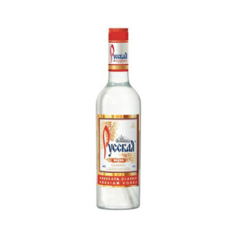
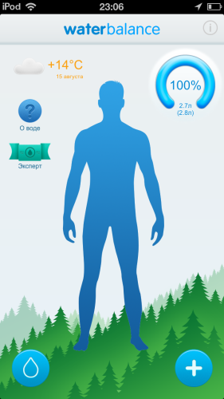

За год россиянин в среднем потребляет около 30 литров питьевой и минеральной воды. Для сравнения в Мексике этот показатель составляет 248 литров на человека в год. Кроме воды россиянин старше 15 лет выпивает в год 15,76 литра чистого этанола 
Впервые обычную воду, которая продаётся, я увидел в середине 90-х. Для человека, который вырос у колонки (незнакомое большинству горожан устройство), и, который знает что зимой, когда пьёшь из неё, нужно быть особенно осторожным, вода за деньги была определённой неожиданностью. Потом привык.
Повзрослев стал потребителем продукта и сам.
Сегодня у меня на кухне всегда стоит три 19-литровых бутылки воды. Обходиться одной бутылкой не вышло. Одна бутылка, значит какое-то время чистой воды в доме обязательно не будет. Обходиться двумя не получилось тоже, ведь «Норинга» доставляет минимум две бутылки, причём не всегда на будущий день, иногда через день.
Нехитрая система выглядит так: когда ставится последняя бутыль, я звоню в доставку.
Операторы в «Норинге» механически учтивы, какими и должны быть операторы. Раздражает лишь то, что каждый заказ они предлагают заказать «воду с ионами серебра» и «воду 0,5 дополнительно к заказу». Одно время звонили и предлагали доставку сами, было очень удобно (последнюю бутыль не всегда устанавливаю именно я). Сейчас почему-то перестали.
Кроме «Норинги» пить что-то другое (в сыром виде) довольно сложно — перепробовали, думаю, всё. Остановились на самой дорогой (бутылка стоит 210 рублей), с самой сложной системой доставки.
Норинга, согласно преданиям, — птичка, способная показать путь к живой воде
В неделю у нас уходит около 2 бутылей воды. То есть около 1700 рублей только на чистую воду (посчитал только что, даже не задумывался раньше). В «Норинге» есть ещё какая-то система бонусов, выливается система в небольшую периодическую скидку. Ещё у них встречаются такие прикольные бутылки с ручкой. К сожалению, не все. К счастью, полтора года в спортзале я хожу не зря и поднимаю бутылку и без ручки одной левой (ей помогает ещё одна правая).
В той же «Спарте» расстраивает «Бердовская Таёжная». Она вообще много где. На мой вкус, совершенно невозможно пить. Но дешевле. Самая недорогая бутилированная вода в Кемерове стоит, кажется, рублей 110 за бутылку.
В маленьких бутылках нравится ещё «Сибирянка». Покупаю иногда в тёплое время года упаковку по 0,5 в машину. Кстати, если ты вдруг не знал, все эти БонАквы и АкваМинерале — обычная вода из крана, к слову, на этикетке там всё честно написано.
Привычка «Щёлкать чайником после того как проснулся» тоже ушла в прошлое с год назад. Домой был куплен кулер (логичнее его называть диспенсер). Преимущество диспенсера ещё и в том, что не нужно использовать совершенно идиотскую помпу. Для экономии электричества кулер подключен через простенький механический таймер из Икеи. В 12 часов ночи он выключает кулер, а в 6 утра включает.
В день человек должен потреблять не менее двух литров чистой воды. Именно чистой воды. Не чая и, тем более обезвоживающего кофе, а просто воды. Я даже пару раз ставил на айпод приложения, учитывающие это потребление. Выпить 2 литра чистой воды невероятно сложно. Порой приходилось для красоты графика выпивать на ночь литр и больше, что, конечно, дурь.

Очень надеюсь, что ты не такой и пьёшь больше, чем я. Напоминаю, что сегодня мы говорили о чистой воде.